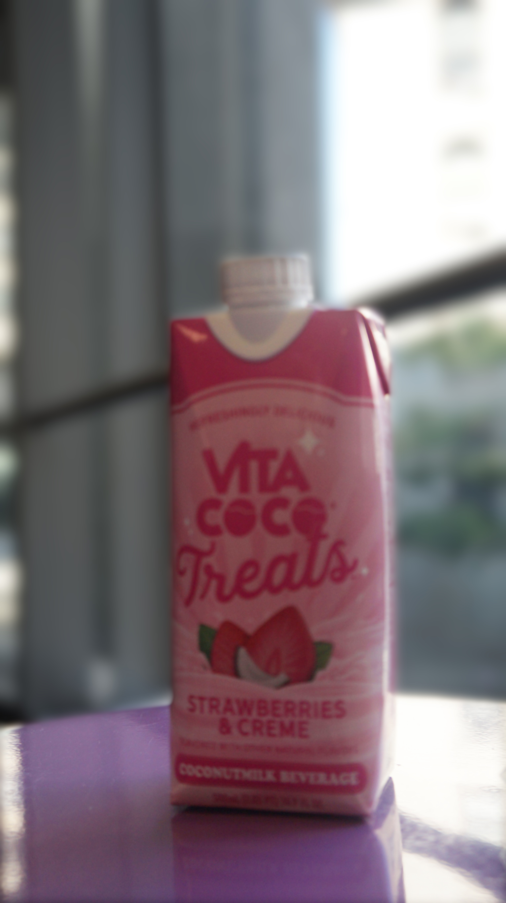
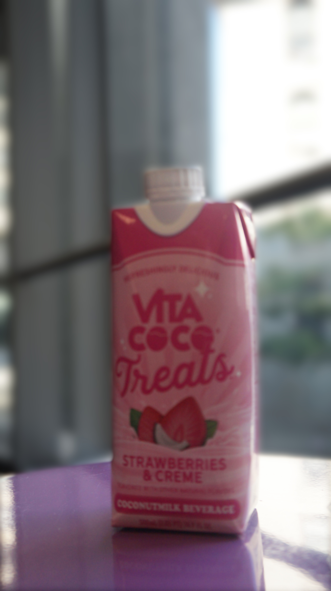
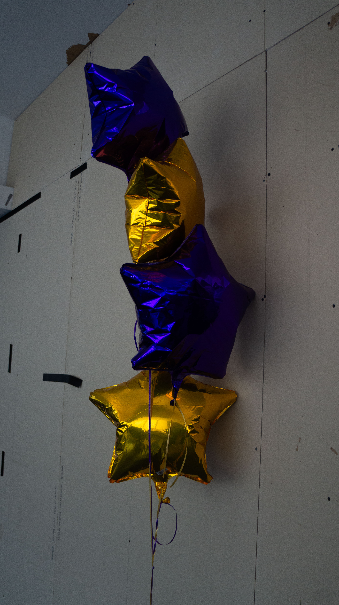
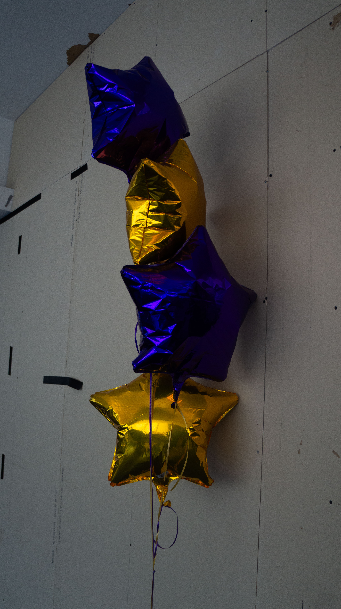

Take 2 photographs - one with shallow depth of field and one with deep depth of field Using the field blur tool, save a copy of your deep depth of field image (fully in focus) and attempt to recreate the shallow depth of field effect in Photoshop Export As > export as a JPG
 

Using Camera Raw, adjust the exposure of 2 images Save As Copy for both so that you have two original images taken from your camera and 2 edits
HOME